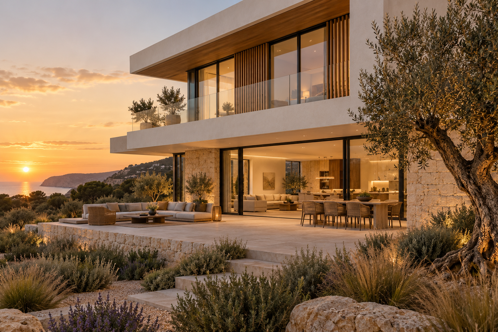

Pensar o todo.
Estudar as necessidades, a orientação solar, a implantação e as condicionantes antes de fechar soluções.
Construir uma moradia é uma grande decisão.
Faça-a com um plano claro, escolhas informadas
e uma obra que pode acompanhar.

VISUALIZAÇÃO ARQUITETÓNICA · INSPIRAÇÃOPlaneamento antes da obra.
Decisões com fundamento.
Acompanhamento com detalhe.
Não é acrescentar tecnologia por acrescentar. É usar informação para construir com mais critério.
Relacionar o terreno, a forma de viver, o orçamento e as soluções técnicas. Antecipar incompatibilidades. Registar decisões. E tornar o progresso da obra compreensível para quem vai viver a casa.
Estudar as necessidades, a orientação solar, a implantação e as condicionantes antes de fechar soluções.
Comparar materiais, conforto, manutenção e impacto no orçamento. Cada escolha tem uma razão.
Juntar progresso, registos de obra e próximos passos numa visão clara. Menos dúvidas, mais contexto.
Saiba o que acontece, o que precisa de decidir e como a inteligência entra em cada fase.
Percurso indicativo. As etapas e a sua sequência são ajustadas ao projeto, ao terreno e ao enquadramento aplicável.
Um relatório que responde ao essencial: o que foi feito, como está o orçamento e o que vem a seguir.
Explorar um relatório de exemplo ↓Semana 18 · Atualização de 16 de outubro de 2026
Estimativa por trabalhos executados
Em execução
Face ao plano de referência
Caixilharias e pavimentos
Demonstração do formato proposto. Não corresponde a uma obra real nem a uma área de cliente já ligada a dados de produção. A periodicidade e os indicadores são definidos por projeto.
Uma moradia inteligente começa nas decisões que não se veem. No isolamento, na orientação, na ventilação e na coordenação das especialidades.
Soluções avaliadas com os técnicos responsáveis e de acordo com as necessidades e o orçamento de cada projeto.
Comece por definir onde quer viver, as necessidades da casa e o investimento disponível. Uma análise técnica às condicionantes do terreno deve anteceder decisões de compra ou compromissos de construção.
O primeiro passo é analisar o projeto, as especialidades, o estado do processo e as peças necessárias à execução. A partir daí, é possível definir o âmbito dos trabalhos e preparar uma proposta adequada.
Depende do terreno, da área, da estrutura, dos acabamentos e dos trabalhos incluídos. Uma estimativa responsável distingue construção, projetos, taxas, arranjos exteriores e outros custos. O orçamento deve explicitar inclusões, exclusões e alterações.
Significa ligar informação e decisões: planear antes de executar, coordenar soluções técnicas, comparar alternativas e acompanhar o impacto no prazo e no orçamento. A tecnologia apoia o trabalho dos profissionais responsáveis.
O formato proposto reúne trabalhos executados, progresso por fase, fotografias datadas, comparação com o calendário, situação financeira, decisões em aberto e próximos passos. Conteúdo e periodicidade são acordados para cada obra.
Os relatórios e as reuniões de acompanhamento permitem manter uma visão do progresso mesmo quando não está no local. O modelo de comunicação e as visitas são definidos no início do projeto.
Conte-nos em que ponto está. Vamos organizar as informações essenciais para dar o próximo passo.